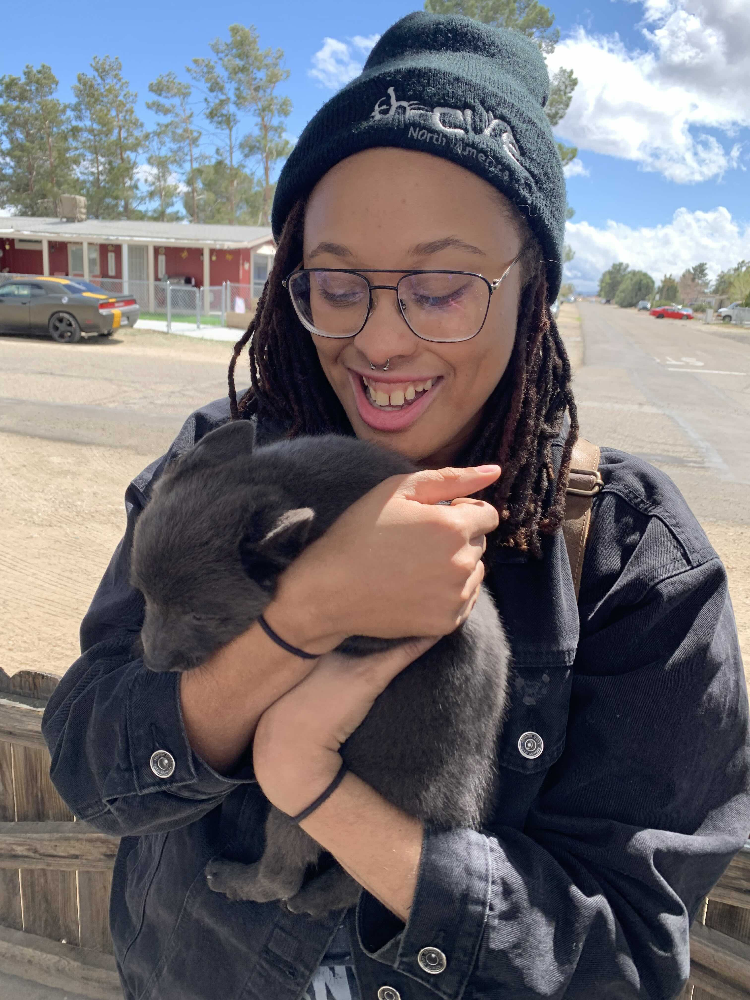

I'm a Data Science Master's student at UC San Diego who believes data deserves good storytelling. My journey here wasn't linear — I've worked in microbiology labs, built a digital media business, and studied film. What ties it all together? A love for storytelling and a knack for finding patterns in chaos.
Now I bring that unique lens to data visualization, blending analytical rigor with visual creativity. I believe the best visualizations don't just show data, they also tell stories that drive decisions.
When I'm not wrangling datasets or building interactive visualizations, you can find me tending to my shrimp aquariums, drawing, or gaming. Fun fact: I wrote my first lines of HTML customizing my Neopets page.
